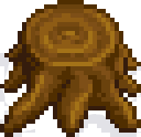
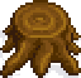

Pule pressione qualquer tecla!

Os Louva-a-deus são insetos fascinantes que podem ser encontrados em várias partes do mundo. Eles são conhecidos por sua aparência única e habilidades de caça incríveis (os reis da decaptitação), mas também possuem muitos outros pontos positivos que os tornam admiráveis. Uma das principais características do louva-a-deus é sua persistência. Eles são insetos extremamente pacientes e persistentes quando se trata de caçar suas presas. Eles podem ficar completamente imóveis por horas, esperando pacientemente por sua presa, até que estejam prontos para atacar. Esse nível de determinação e perseverança é uma característica admirável e útil na natureza.
Além disso, os Louva-a-deus também são muito adaptáveis. Eles têm a capacidade de se camuflar em seu ambiente e se misturar com os ambientes para evitar serem detectados por predadores ou presas.
Os louva-a-deus podem não parecer intimidadores de início, são muito pequenos e frágeis, o que os tornam mais incríveis; ser um Louva-a-deus é ser peristente , as vezes podem não acreditar no nosso potencial, podem determinar que não faremos, mas usaremos isso como combustível para surpreendê-las com nossas conquistas. Não somos qualquer tipo de "barata" nós somos Louva-a-deus nós somos a Mantis Tech.